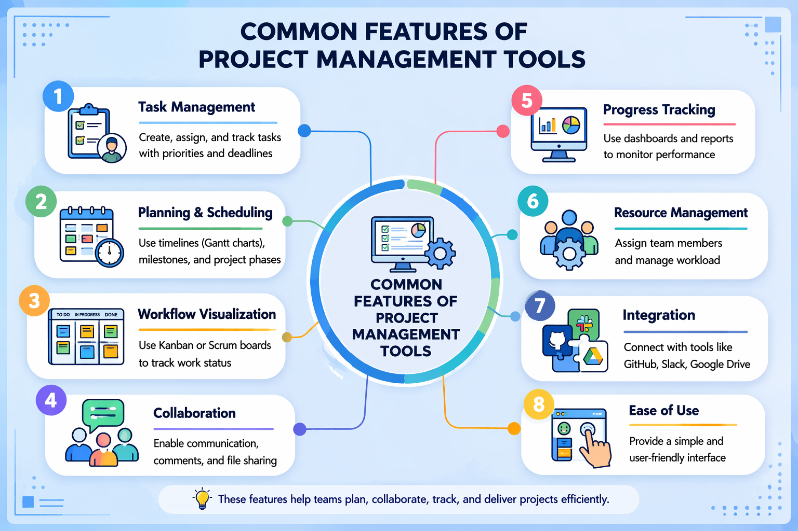

Know what to look for when choosing software for your team.
Project management tools are software applications that help teams plan, organize, track, and manage project work. They provide a central place for tasks, communication, and progress tracking, improving collaboration and productivity.
Understanding tool features helps us:
Select the most suitable tool for our project
Improve team collaboration and efficiency
Track progress and meet deadlines effectively
Avoid choosing tools that do not match team needs
| No. | Feature | Description |
|---|---|---|
| 1 | Task Management | Create, assign, and track tasks with priorities and deadlines |
| 2 | Planning & Scheduling | Use timelines (Gantt charts), milestones, and project phases |
| 3 | Workflow Visualization | Use Kanban or Scrum boards to track work status |
| 4 | Collaboration | Enable communication, comments, and file sharing |
| 5 | Progress Tracking | Use dashboards and reports to monitor performance |
| 6 | Resource Management | Assign team members and manage workload |
| 7 | Integration | Connect with tools like GitHub, Slack, Google Drive |
| 8 | Ease of Use | Provide a simple and user-friendly interface |

This diagram summarizes the key features that help teams manage tasks, collaborate effectively, and track project progress.
Project managers and Scrum Masters use these features to:
Plan and manage tasks and sprints
Track team performance
Improve communication and coordination
Ensure project goals are achieved on time
When selecting a tool, we should consider:
Agile, Waterfall, or Hybrid?
Small team or large enterprise?
What's must-have vs nice-to-have?
Does it work with your stack?
Will the team actually use it?
Asana. (n.d.). Features. Retrieved from https://asana.com/features
Atlassian. (n.d.). Software comparison. Retrieved from https://www.atlassian.com/software/comparison
Capterra. (n.d.). Project management software. Retrieved from https://www.capterra.com/project-management-software/
Coursera. (n.d.). Project management tools. Retrieved from https://www.coursera.org/articles/project-management-tools